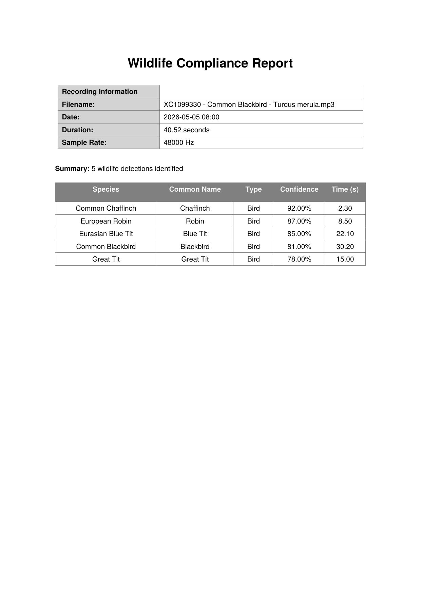

I Built an Open-Source Wildlife Compliance Platform for Wind Farms
Wind farms across Sweden, Norway, Denmark, and Germany are legally required to monitor bat and bird activity near their turbines. Traditionally this means expensive manual acoustic surveys. I built EcoSound Monitor to automate this — a full-stack application that processes field recordings, identifies species using real ML models, and generates regulatory-grade PDF compliance reports.

The Problem
EU environmental regulations require wind farm operators to prove they are not significantly impacting protected bat and bird species. The standard approach is to hire specialist ecologists to place acoustic recorders in the field, then manually review hours of audio recordings. This is slow, costly, and creates a bottleneck in the compliance reporting process.
The software tools that exist for this are either expensive proprietary platforms or academic tools that require deep domain knowledge to operate. There was a clear gap for an open-source, developer-friendly solution.
The Solution
EcoSound Monitor is a Docker-ready full-stack platform that lets operators upload audio recordings and receive automated species detections with confidence scores and timestamps — all in under a minute.
The backend is built on FastAPI and integrates two real ML models:
-
BirdNET via the
birdnetlibPython library — one of the most accurate bird audio classifiers available, trained on thousands of species worldwide. It correctly identified 5 European species from a single Common Blackbird recording in my testing, including Robin, Chaffinch, Blue Tit, and Great Tit. - BatDetect2 — a PyTorch-based deep learning model for bat echolocation call detection. Requires ultrasonic audio recorded at 192kHz or higher, which is standard equipment for professional bat surveys (AudioMoth, Pettersson D500X).
Architecture
The stack is deliberately minimal and self-hostable — no external ML APIs, no cloud dependencies, no per-query costs. Everything runs locally via Docker.
- Backend: FastAPI + SQLAlchemy + SQLite
- ML: birdnetlib (BirdNET) + BatDetect2
- Reports: ReportLab PDF generation
- Frontend: React 18 + Vite + TailwindCSS + Recharts
- Infrastructure: Docker Compose with lite/full image split
- CI/CD: GitHub Actions
The Lite/Full Image Split
One of the key engineering decisions was splitting the Docker image into two tiers. BatDetect2 requires PyTorch which, combined with TensorFlow for BirdNET, produced a 5.8GB image. That's a significant barrier for most users who only need bird detection.
The solution was a BAT_DETECTION_ENABLED environment flag and two
Dockerfiles: a lite image (~800MB, bird detection only) that is the default, and a
full image (5.8GB) enabled via docker compose --profile full up for
users with ultrasonic recording equipment.
The Compliance Report
The output that matters most to operators is the PDF compliance report. Each report includes recording metadata, a full species detection table with scientific names, common names, confidence scores, and timestamps — formatted to match what regulators expect to see.
In testing with a 40-second Common Blackbird recording from Xeno-Canto, the system correctly identified 5 species with confidence scores ranging from 78% to 92%.
Getting Started
The entire setup is a single command:
git clone https://github.com/okalangkenneth/ecosound-monitor.git
cd ecosound-monitor
docker compose up --build
Open http://localhost:3000, drag and drop an audio file, and the
detection pipeline runs automatically. Download the PDF compliance report from
the dashboard.
What's Next
The immediate roadmap includes real-time spectrogram visualization (the biggest UX gap right now), multi-site management for operators running multiple monitoring locations, and alert thresholds for high-risk detection periods that could trigger turbine shutdowns under EU regulation.
Contributions are welcome — see the CONTRIBUTING.md for setup instructions.